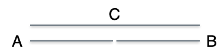

flowchart LR
subgraph Konstrukt
direction LR
theoretisch
latent
nicht-beobachtbar
end
subgraph Messmodell
direction LR
empirisch
manifest
beobachtbar
end
Konstrukt --> Messmodell
7 Messen
7.1 Lernsteuerung
7.1.1 Lernziele
- Sie können den Begriff “Messen” definieren.
- Sie können den Begriff “Fragebogen” definieren und anhand von Beispielen erläutern.
- Sie können die Messgüte eines bestimmten Fragebogens einschätzen.
- Sie können Beispiele nennen für implizites Messen in der Psychologie.
7.1.2 Position im Lernpfad
Sie befinden sich im Abschnitt “Messinstrumente” in Abbildung 1.2.
7.2 Was ist Messen?
7.2.1 Operationalisierung
Psychologische Variablen (Konstrukte) sind nicht (direkt) messbar, mann muss sie operationalisieren, dann kann sie erst messen, s. Abbildung 7.1.
Beispiel 7.1 (Extraversion bei den “Big Five”) Satow (2020) operationalisiert in seinem Instrument B5T die Persönlichkeitsvariable Extraversion anhand von 10 Items, s. Abbildung 7.2. Persönlichkeitsvariable sind Eigenschaften, die zeitlich stabil sind und sich situationsunabhängig auf eine bestimmte Weise im menschlichen Erleben und Verhalten manifestieren. Extraversion beschreibt das Ausmaß, in dem eine Person hohe Aktivität in sozialen Interaktionen und anstrebt. Hoch extravertierte Menschen sind dominant, gesellig, enthusiastisch und abenteuerlustig.\(\square\)

7.2.2 Messen
Definition 7.1 Messen ist das Zuordnen eines empirischen Zusammenhangs in einen Zusammenhang, der in Zahlen ausgedrückt wird und zwar nach “vernünftigen Regeln”, d.h. so, dass sich die empirischen Beziehungen in den numerischen Beziehungen widerspiegeln.\(\square\)
ü뮂Äçüè´ Messen ist das Fundament einer empirischen Wissenschaft.
üßë‚Äçüéì Wer viel misst, misst auch viel Mist!
Eine ausführlichere Darstellung des Messens findet sich z.B. bei Eid, Gollwitzer, und Schmitt (2013).
Ein Beispiel für diese “vernünftigen Regeln” ist:
- Misst man zwei Stöcke A und C, wobei C länger ist als A (\(C \succ A\)), so muss die Zahl, die C zugeordnet wird (\(Z(C)\)) größer sein, als die Zahl, die Stock C zugeordnet wird (\(Z(C)\)): \(C \succ A \Leftrightarrow Z(C) > Z(A)\), s. Abbildung 7.3.

Wenn Stöcke A und B gleich lang sind und zusammen so lang wie Stock C sind, s. Abbildung 7.3, dann muss für die den Stöcken zugeordneten Zahlen \(Z(A), Z(B), Z(C)\) gelten:
- Bedingung der Nominalskala: Gleichheit - \(Z(A) = Z(B)\)
- Bedingung der Nominalskala: Ungleichheit - \(Z(A) \ne Z(C)\)
- Bedingung der Ordinalskala: Rangfolge - - \(Z(A) < Z(C), Z(B) < Z(C)\)
- Bedingung der metrischen Skala: Additivität - \(Z(A) + Z(B) = Z(C)\square\)
Das Skalenniveau einer Variable kann nicht vorausgesetzt werden, sondern muss überprüft werden.
Beispiel 7.2 (Messen auf der Nominalskala) Messen auf der Nominalskala kann bedeuten, dass man Frauen die Zahl 1 zuordnet und Männern die Zahl 0, vgl. Abbildung 7.4.\(\square\)
flowchart LR
subgraph ES[Empirisches System]
M1[Mann 1]
M2[Mann 2]
F1[Frau 1]
F2[Frau 2]
F3[Frau 3]
end
subgraph NS[Numerisches System]
Z1[1]
Z0[0]
end
M1 --> Z0
M2 --> Z0
F1 --> Z1
F2 --> Z1
F3 --> Z1
7.2.3 Quiz
Wie “gut” eine Operationalisierung ist, kann man empirisch prüfen. Dafür gibt es einige Kennzahlen, s. Kapitel 7.4.
7.3 Fragebogen
7.3.1 Beispiele
7.3.2 Definition
Einen inhatlich psychologisch und methodisch psychologisch (“psychometrisch”) fundierten Fragebogen bezeichnet man auch als (psychologischen) Test1
Definition 7.2 (Psychologischer Test) Ein Test ist ein wissenschaftliches Routineverfahren zur Untersuchung eines oder mehrerer empirisch abgrenzbarer Persönlichkeitsmerkmale mit dem Ziel einer möglichst quantitativen Aussage über den relativen Grad der individuellen Merkmalsausprägung (Lienert und Raatz 1998).\(\square\)
7.3.3 Elemente
Ein (psychologischer) Test besteht aus folgenden Elementen:
- Item: Eine Frage, auf die der Proband antworten soll bzw. die er lösen sollen. Ein Item operationalisiert einen Teilaspekt eines Konstrukts.
- Subtest: Untertest aus mehreren Items eines Tests, die jeweils zu einem gemeinsamen Punktwert zusammengezogen werden.
- Itemantwort: Antwortmöglichkeiten eines Items.
- Skala: Andere Bezeichnung für einen Subtest oder Bezeichnung für einen Gesamttest, wenn dieser nur aus einem einzelnen Punktwert besteht.
- Score: Punktwert eines Probanden aus einem Subtest oder einem Test.
Beispiel 7.3 Item 1 aus der Extraversionskala des B5T “Ich bin gerne mit anderen Menschen zusammen.”\(\square\)
Beispiel 7.4 Beispielitem: „Ich bin ein ängstlicher Typ“ (Satow 2020).
Dieses Item hat folgende Itemantwort:
trifft gar nicht zu (1 Punkt)
trifft eher nicht zu (2 Punkte)
trifft eher zu (3 Punkte)
trifft genau zu (4 Punkte)
7.3.4 Antwortformate
Eine Skala hat (fast) immer eine homogene Itemantwort, d.h. alle Items einer Skala haben i.d.R. das gleiche Antwortformat. Gängige Antwortformate sind:
- Häufigkeit: z.B. nie – selten – gelegentlich – oft – immer
- Intensität: z.B. gar nicht – wenig – mittelmäßig – überwiegend – völlig
- Bewertung z.B. trifft gar nicht zu – trifft eher nicht zu – trifft eher zu – trifft völlig zu
Man kann Antwortformate dahingehend unterscheiden, ob sie uni- oder bipolar aufgebaut sind:
- unipolar: z.B. nie – selten – gelegentlich – oft – immer
- bipolar: z.B. trifft überhaupt nicht zu (-2) – (-1) – (0) – (+1) – (+2) trifft voll und ganz zu
7.3.5 Bezugsorte
üßë‚Äçüéì Wo finde ich Tests? Welche darf ich wie benutzen?
ü뮂Äçüè´ Hier sind einige Bezugsorte:
Gesis-ZIS: Hier finden sich eine Anzahl an wissenschaftlich untersuchten Fragebögen, z. B. der BFI-10, ein Kurz-Fragebogen zu den Big Five mit nur 10 Items
Der Psyndex ist ein Verzeichnis der auf Deutsch publizierten Tests (ca. 7000), davon auch einige zum freien Download.
Die Hogrefe-Testzentrale ist der bekannteste kommerzielle Anbieter für psychologische Tests in Deutschland.
Viele (deutschsprachige) Tests sind in (deutschsprachigen) Fachzeitschriften (z. B. Diagnostica) publiziert.
Oft hilft es, die Autoren anzuschreiben.
Bei Researchgate (Facebook für Wissenschaftler), OSF und auf anderen Preprint-Servern sind viele (Preprint-) Paper hochgeladen und kostenlos abrufbar (ggf. Email-Adresse von Hochschule nötig).
üßë‚Äçüéì Welche Tests darf ich wie benutzen?
7.3.6 Rechte und Pflichten
Wichtig
Kommerzielle Tests müssen von Ihnen käuflich erworben werden oder eine schriftliche Nutzungsgenehmigung durch den Verlag vorliegen, sonst ist die Nutzung nicht erlaubt. Andere, nicht-kommerzielle Tests (z. B. von Gesis) dürfen Sie ohne Rückfrage und ohne Gebühr verwenden. Die Zitationspflicht bleibt davon unberührt.$
7.3.7 Beispiele für Tests
7.3.8 Make or buy?
üßë‚Äçüéì Wieso der ganze Stress? Ich denk mir ein paar Fragen aus, und fertig ist der Lack!
üë©‚Äçüè´ Bei nicht-psychologischen Variablen, die einfach zu beboachten sind, so wie z.B. Schuhgr√∂√üe, ist das vollkommen ok. Bei psychologischen Variablen sollte man besser auf gepr√ºfte Qualit√§t zur√ºckgreifen.
Hinweis
Selbst gestrickte (psychologische) Fragebögen sind meist problematisch, man sollte besser auf Instrumente mit geprüfter Qualität zurückgreifen.\(\square\)
Verwenden Sie möglichst keine selbst gestrickten Fragebögen/Items für psychologische Konstrukte: Gütekriterien eines Tests aus selbst gestrickten Items sind unbekannt oder oft fragwürdig. Verwendet man eigene Messinstrumente (z. B. Fragebögen) so ist man für den Nachweise der Güte selber verantwortlich. Bei publizierten Verfahren kann man sich einfacher auf die Ergebnisse des publizierten Berichts berufen. Es ist z. B. fraglich, ob es sinnvoll/„erlaubt“ ist, einen Mittelwert von selbst gestrickten Items zu bilden: Item 1: „Meine Füße fühlen sich groß an“; Item 2: „Die letzten 10 Filme waren echt cool und die nächsten 10 Songs werden halb-cool sein oder spitze“. Was sagt der Mittelwert dieser beiden Items aus? Schwer zu sagen (nichts?!).
Das Item „Ich glaube, ich habe zwei Arme“ wird sehr „leicht“ sein (d.h. hoher Mittelwert); daher wird die Streuung des Items gering sein. Daher wird die Korrelation mit einer anderen Skala gering sein. Das Item hat also kaum Informationswert und ist damit von geringem Wert.
Insgesamt ist die Erstellung eines Fragebogens für ein psychologisches Konstrukt ein aufwändiges Unterfangen. In der Regel ist man besser beraten, ein existierendes Verfahren zu suchen/zu verwenden.
Nicht-psychologische Variablen bzw. beobachtbare Dinge sind viel einfacher zu verwenden; hier sind selbst gestrickte Verfahren id.R. kein Problem (z. B. „Welche Automarke fahren Sie?“, „Wie viele Facebook-Freunde haben Sie?“, „Wie viele Kinder haben Sie?“)
7.4 Messgüte
Die Güte einer Messung wird in der Psychologie zumeist anhand dreier Kennzahlen festgemacht:
- Reliabilität (Messgenauigkeit)
- Objektivität (Unabhängigkeit vom Kontext)
- Validität (Gültigkeit)
7.4.1 Reliabilität
Die Reliabilität von psychologischen (quantitativen) Skalen wird häufig über die sog. interne Konsistenz ermittelt.
Es gibt mehrere Formeln zur Schätzung von Konsistenzkoeffizienten Hier sollen nur die am häufigsten verwendete dargestellt werden: Cronbachs Alpha Höhe des Koeffizienten hängt vom Verhältnis der Summe der einzelnen Itemvarianzen (\(\sigma_i^2\)) zur Gesamtvarianz (\(\sigma^2\)) des Tests ab. Zwei denkbare Extrem-Szenarien sind︎ - Itemvarianzen hoch und Itemkovarianzen gering: Cronbach-alpha-Koeffizient niedrig ︎ - Itemvarianzen niedrig und die Itemkovarianzen hoch: Cronbach-alpha-Koeffizient hoch.
7.4.2 Objektivität
Für die Objektivität wird meist keine Kennzahl angegeben.
7.4.3 Validität
Für die Gültigkeit einer Skala wird oft die Korrelation zu anderen Konstrukten berichtet, die laut Theorie hoch oder gering oder gar nicht mit dem zu untersuchenden Konstrukt korreliert sein soll. Entspricht die beobachtete Korrelation der laut Theorie erwarteten, so ist dies als Beleg für die Validität des Verfahrens zu sehen.
7.5 Implizites Messen
Zur Messung von sozialpsychologischen oder persönlichkeitspsychologischen Konstrukten wird häufig auf eines von zwei Operationalisierungsarten zurückgegriffen:
- Selbsteinschätzung via (psychometrisch fundiertem) Fragebogen (explizite Messung)
- Leistungstests often in Form von reaktionszeitbasierten Tests (implizite Messung)
Definition 7.3 (Implizite Messung) Eine Messung eines psychologischen Konstrukts, die erhalten wird, während die zu bewertende Person nicht weiß, dass die Messung stattfindet, die häufig zur Bewertung von Einstellungen, Stereotypen und Emotionen in der sozialen Kognitionsforschung verwendet wird. Typischerweise wird ein implizites Maß als Antwortergebnis eines experimentellen Verfahrens bewertet, bei dem der Teilnehmer mit einer kognitiven Aufgabe beschäftigt ist. Beispielsweise könnte eine Wortstamm-Vervollständigungsaufgabe verwendet werden, um Emotionen implizit zu bewerten, so dass “jo_” vervollständigt werden könnte, um ein positives emotionales Wort (z. B. Joy) oder ein neutrales Wort (z. B. Joggen) zu bilden.2\(\square\)
7.5.1 Der Implizite Assoziationstest
Der Implizite Assoziationstest (IAT) (Greenwald und Banaji 1995) ist ein Verfahren zur Messung unbewusster Assoziation zwischen mentalen Repräsentationen von Objekten. Typische Anwendung ist die Messung von Vorurteilen.
7.5.2 Fundort für implizite Verfahren
Psytoolkit erlaubt es, psychologische Experimente inkl. Reaktionszeit-Messungen zu entwickeln, kostenlos. Die Studien können direkt über die Plattform online gestellt werden.
Die Reaktionszeitsmessungen müssen mit einer Skriptsprache geschrieben werden, aber es gibt von viele Beispiele (inkl. deren Skripte), die man einfach kopieren kann. Die Experimente können im Browser durchgeführt werden.
Übungsaufgabe 7.1
Wählen Sie ein Instrument zur Messung Reaktionszeit aus der Liste von PsyToolkit.
Probieren Sie das Instrument aus.
-
Erstellen Sie eine Kurzbeschreibung des Instruments:
Name
Beschreibung/Ablauf
Zu messendes Konstrukt
Korrelate
Forschungstand (z.B. Anzahl und Qualität der Befunde zu(un)gunsten des Instruments)
Beispielhafte Hypothese für dieses Instrument
Hinweis auf einen passenden Originalartikel
7.6 Weiterführende Literatur
Ein Klassiker mit einem breitem Blick auf psychologische Forschung ist Bortz und Döring (2006). Einen zugänglichen Einstieg (allerdings auf englischer Sprache), der kostenlos und frei verfügbar ist, bieten Jhangiani, Chiang, und Cuttler (2019). Recht nützlich ist auch der Überblick von Peters und Dörfler (2019).